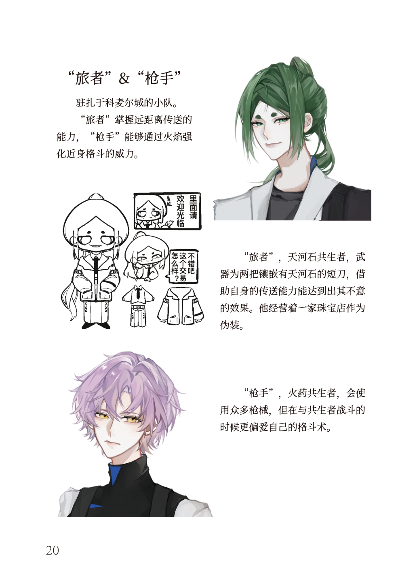
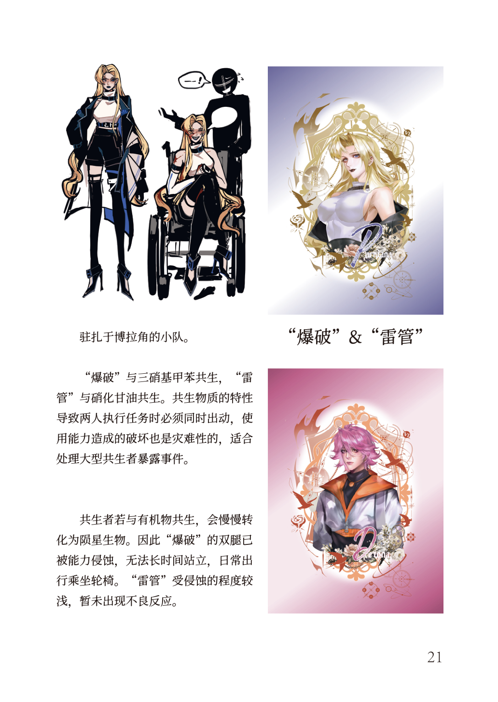
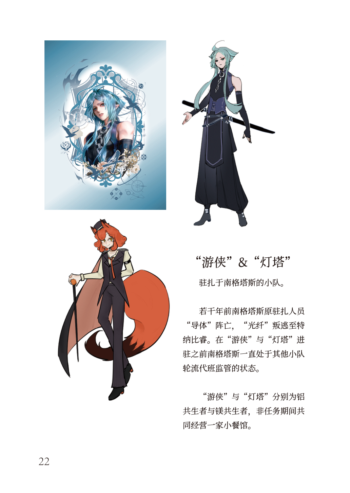
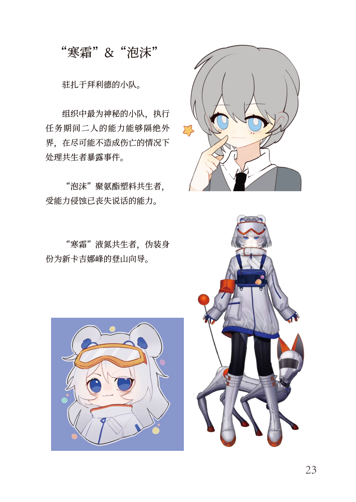
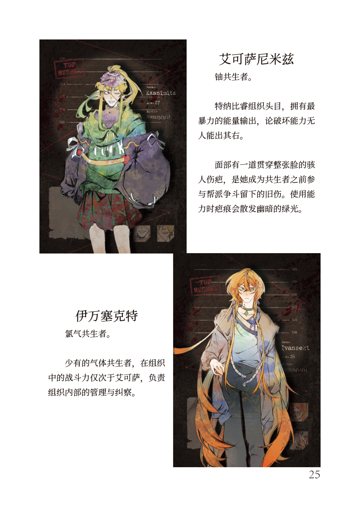
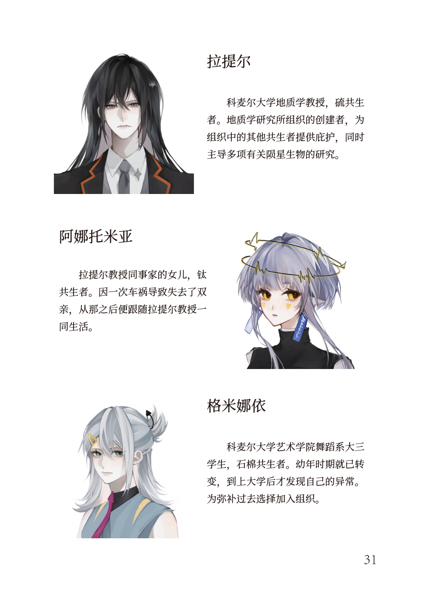
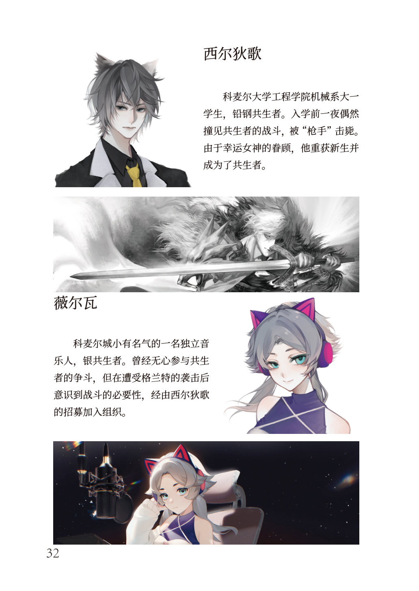

势力阵营
四大势力 · 杜兰德尔&Miners · 特纳比睿 · 最终阵线 · 地质学研究所
全部的城市均由名为"杜兰德尔"的世界性政府管辖。最初的共生者有一部分依仗自己的能力无恶不作，杜兰德尔在前期将此类事件公布为恐怖袭击，共生者被以惨痛的代价逮捕，然后被包括但不限于洗脑、精神控制等方式收编成为Miners组织成员。另外一部分的组织成员来自杜兰德尔直辖的福利设施之中，但组织成员无一不经过记忆清除过程并恪守严格的组织教条。
组织的成员两人一组，现有4组小队处于活跃状态。他们的主要职责是封锁共生者相关的消息，清除共生者暴露现场的目击者。待到组织成员扩充之后，可以做到在事发两分钟之内赶到现场并警戒。
"旅者"掌握远距离传送的能力，"枪手"能够通过火焰强化近身格斗的威力。"旅者"为天河石共生者，武器为两把镶嵌有天河石的短刀，借助传送能力达到出其不意的效果。经营珠宝店作为伪装。"枪手"为火药共生者，会使用众多枪械，但在与共生者战斗时更偏爱自己的格斗术。

"爆破"与三硝基甲苯共生，"雷管"与硝化甘油共生。必须同时出动，破坏力灾难性，适合处理大型共生者暴露事件。"爆破"双腿已被能力侵蚀，无法长时间站立，日常出行乘坐轮椅。"雷管"受侵蚀程度较浅，暂未出现不良反应。

若干年前南格塔斯原驻扎人员"导体"阵亡，"光纤"叛逃至特纳比睿。"游侠"与"灯塔"分别为铝共生者与镁共生者，非任务期间共同经营一家小餐馆。

组织中最为神秘的小队，执行任务期间二人的能力能够隔绝外界，在尽可能不造成伤亡的情况下处理共生者暴露事件。"泡沫"为聚氨酯塑料共生者，受能力侵蚀已丧失说话的能力。"寒霜"为液氮共生者，伪装身份为新卡吉娜峰的登山向导。

基戈萨港向来以混乱著称，早年间的特纳比睿只是港口中一个不起眼的小帮派，但在帮派的一个不起眼的成员被残忍杀害并扔进核废料堆中之后一切都开始改变。陨石的力量赋予她第二次生命，同时赋予了她释放核辐射的恐怖力量。从那之后基戈萨港的地下帮派便只剩特纳比睿一个。
艾可萨尼米兹，便是这个组织头目的名字。她除了控制基戈萨港之外还有更大的目标——控制整个世界。在她看来，共生者拥有强大的力量，就应该成为规则的制定者，而不是像如今这样隐藏于社会的黑暗中。她通过各种方式招揽了若干名共生者，并将其任命为干部。对于拒不配合的人，她的命令则是格杀勿论。
特纳比睿的魔爪遍布整个雷凯尼大陆，除艾可萨本人以外，该组织的共生者人数已经达到了9人，是目前世界上共生者人数最多的组织。
被杀害后扔进核废料堆中重生，获得释放核辐射的恐怖力量。面部有贯穿伤疤，使用能力时伤疤发出暗绿色光。控制基戈萨港，目标是控制整个世界。
稀有气体类共生者。组织内战斗力仅次于艾可萨。负责内部管理和纪律。
原Miners成员，叛逃至特纳比睿。逃亡期间大部分肉身损坏，70%身体已被机械装置替代。核心能力为骇入电子设备。
组织中最我行我素的共生者。患有精神障碍，执行任务具有很大不确定性，不会轻易被派发任务。
突然出现在基戈萨港的神秘女孩，名字来自亚特亚海中剧毒贝类。上岸后屠杀所有人，后被艾可萨击败并收编。强行突破碎裂临界会变回海兔状态。
负责组织间谈判。刚玉特性使其成为超强防御型共生者。奉命夺取抑制剂样品，却成为第一个试验对象。
与叶佩斯娅是恋人，共同经营美术馆。对组织心怀不满，计划假死脱身被识破，引发三方势力混战。
与卡尔文是恋人关系。同样想脱离组织回归普通人生活。计划假死脱身被识破。
伪装身份为科麦尔城律师。能力为火焰和岩浆操控，使用能力时头发变粉色。排名靠后但实力很强。
身份为塞烈加中心医院的义肢植入专家。能力偏向治疗型，负责情报收集。

基戈萨港的一部分人不愿意将这座城市的资源拱手让给杜兰德尔，便策划了一场针对大型工业设施的无差别袭击。这群人自称"最终阵线"，携带着大量的工业技术转移至新卡吉纳峰的另一侧。
最终阵线的卧底轻易渗透到萨尔凡尼基当地的管理层之中并策反杜兰德尔派遣的管理人员。利用新卡吉纳峰形成的天然屏障和信息屏障，最终阵线控制萨尔凡尼基后开始背地里积攒力量，吸纳当地原有的试图推翻杜兰德尔统治的人组成了一支反叛军，等待时机发动革命。
注：企划文档中最终阵线无角色卡，仅有组织描述。
在初代共生者诞生之时，有少数的共生者坚守内心的底线，躲过了Miners布下的天罗地网。然后这些人就搬到有一定自治权的科麦尔城——在那里Miners组织成员不敢轻易放肆——慢慢的形成了第一个自然形成的共生者组织。
在这场风波之后，他们发现想达成完美的和平，就必须让共生者们从人们的记忆中消失。于是他们就开始着手于能够消除共生者能力的药剂的研究。人们发现了藏在陨星生物甲壳内部的液体，并将这种液体命名为"帕拉里斯"。所长拉提尔先生甚至以身试险口服精炼后的这种液体，发现可以抑制共生者体内的力量。
地质学研究所创建者，为共生者提供庇护，主导陨星生物研究。以身试险口服帕拉里斯液体。
因车祸失去双亲，跟随拉提尔教授一同生活。
幼年时期已转变，上大学后发现异常。为弥补过去加入组织。
入学前撞见共生者战斗，被"枪手"击毙后重生成为共生者。本作主角。
遭受格兰特袭击后意识到战斗必要性，由西尔狄歌招募加入。

